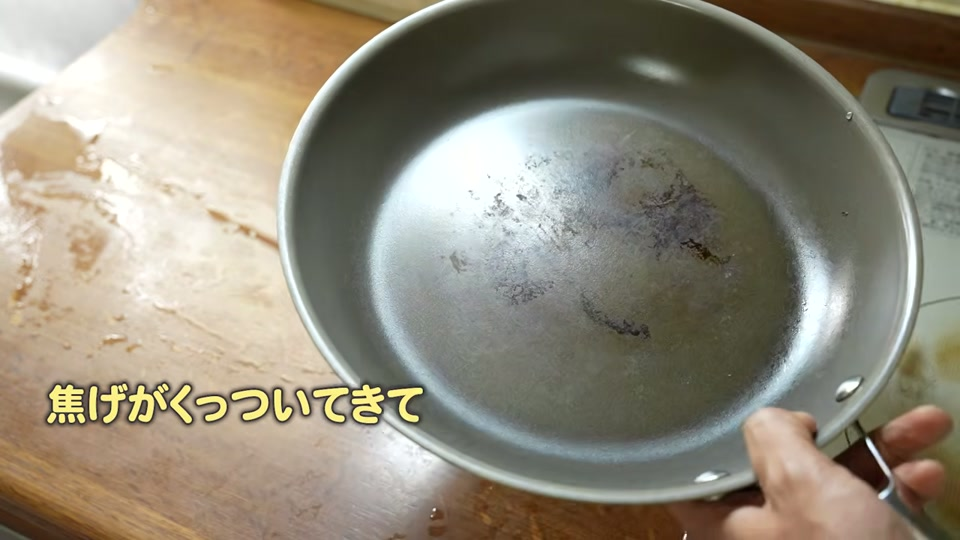
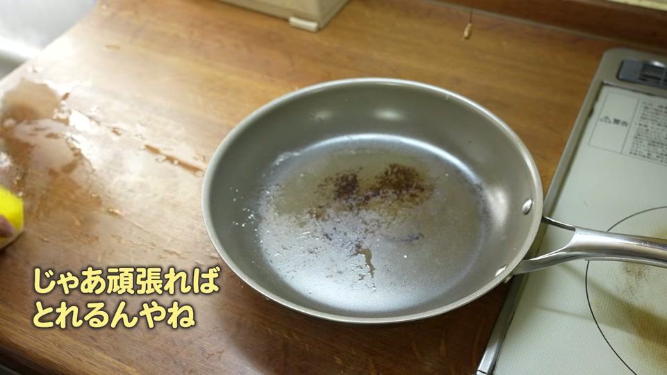
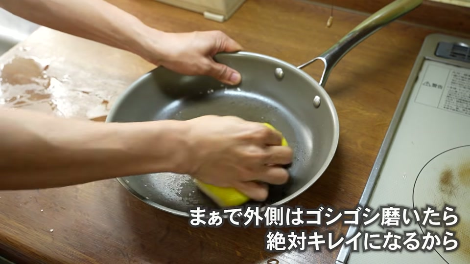
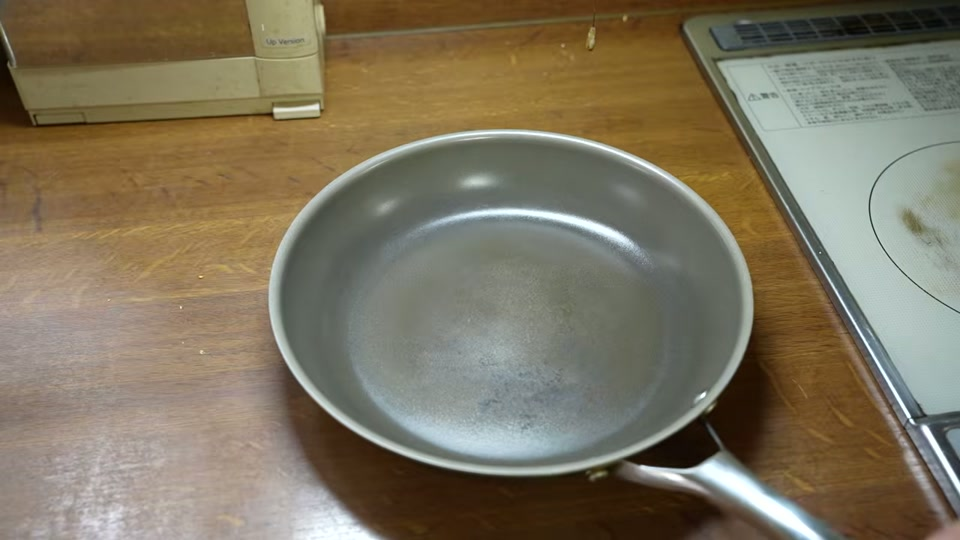
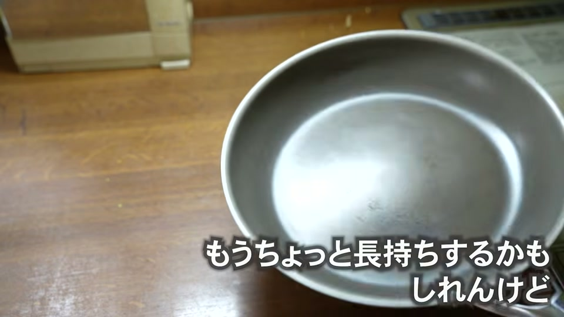

脱フッ素や安全性を意識してノンスティック（ノンスティック加工）フライパンを選ぶ人が増えています。その中でも注目を集める「コレール（CORELLE）」のフライパンですが、実際に長期間使用した際の耐久性や焦げ付きやすさが気になる方も多いのではないでしょうか。
結論からお伝えすると、コレールのフライパンであっても、強火（IHの高出力など）で毎日使い続けると約1年で中央部に頑固な焦げ付きが発生し、寿命を迎えます。
この記事では、強火で1年間使い続けたコレールフライパンのリアルな状態と焦げ付きの原因、長持ちさせるためのお手入れ・火力設定、そしてフライパンの焦げ付き悩みから本質的に解放される方法について詳しく解説します。
結論：強火で使うとノンスティックフライパンの寿命は約1年

まず結論として、どのようなノンスティックコーティングのフライパンであっても、以下のような使い方をすると短期間で劣化してしまいます。
- 強火（IHで1000W以上の高出力など）で日常的に調理する
- 高温のまま急冷したり、金属タワシで強く擦ったりする
「軽くて安くてくっつかず、永久に長持ちする」という条件をすべて満たすフライパンは存在しません。コレールフライパンのコーティング性能を維持するためには、中火以下（IHなら800W程度）に抑えた適切な火加減での使用が不可欠です。
1年後のコレールフライパンの状態と焦げ付きの実態

実際に、強火での調理が好きな家族（実家のお父さん）が1年間毎日使い続けた「コレール フライパン（26cm）」の状態を検証しました。
中央部分に落ちない黒ずみと焦げ付きが発生
1年使用したフライパンを確認すると、最も熱が当たる中央部分を中心にくっきりと黒ずみや蓄積した焦げ付きが発生していました。 日常的なつけ置き洗いだけでは落とせないレベルまで焦げが定着しており、再度調理に使用すると食材がすぐに引っ付いてしまう状態です。
なぜ焦げ付く？強火（IH高出力）がコーティングに与えるダメージ

コレールのフライパンは下地に熱伝導率の高いステンレスなどが使われていますが、強火で使用することで以下のようなダメージが発生します。
1. 下地の金属が高熱になりすぎる
IHの高出力（1000W以上など）やガスの強火で使用すると、フライパンの下地金属が瞬時に高熱化します。これにより、表面のノンスティックコーティングに大きな熱負荷がかかります。
2. コーティングの熱劣化が早まる
ノンスティック加工は熱に弱く、高温にさらされ続けることで徐々に熱劣化が進みます。劣化すると表面の滑らかさが失われ、油馴染みが悪くなって焦げ付きの原因となります。
焦げ付いたときの対処法とお手入れの限界

もしコレールのフライパンが焦げ付いてしまった場合、お手入れでどこまで改善できるのでしょうか。適切な手順と注意点は以下の通りです。
正しいお手入れ手順
- お湯で焦げを緩める：フライパンにお湯を張り、焦げ付きを柔らかくします。
- 柔らかいスポンジとクレンザーで優しく磨く：硬いタワシではなく、クレンザーをつけた柔らかいスポンジで円を描くように優しく洗います。
| お手入れ方法 | 効果 | 注意点・リスク |
|---|---|---|
| お湯につける | 軽度の焦げを浮かす | 重度の焦げには効果が薄い |
| クレンザー＋柔らかいスポンジ | 表面の蓄積汚れを落とす | 強く擦りすぎないよう注意 |
| 金タワシでガリガリ磨く | 焦げは削れる | コーティング自体が削れて完全に破損する |
一度熱で劣化し、コーティングが傷んでしまったフライパンは、焦げを落としたとしても食材が引っつきやすい状態自体を元に戻すことはできません。
フライパンの焦げ付き悩みから一生解放される方法

「買い替えても数年で焦げ付く」というサイクルから抜け出したい場合、フライパンの種類そのものを見直すのが最も効果的です。
正しい余熱をマスターして「オールステンレスフライパン」へ移行する
焦げ付きの悩みから根本的に解放されたい方には、コーティングのないオールステンレスフライパンがおすすめです。
- 寿命がない（一生もの）：コーティングが剥がれる心配がなく、劣化しません。
- 強火や研磨に強い：万が一焦げ付いても、金タワシやクレンザーでしっかり磨いて元通りにできます。
- 正しい余熱がポイント：使用前にしっかりと予熱（余熱）を行い、油を馴染ませてから調理することで食材がくっつかずに調理できます。
調理技術（余熱のコツ）を一度覚えてしまえば、フライパンを何度も買い替える必要がなくなります。
まとめ：コレールを長持ちさせるコツと次のフライパン選び

コレールのフライパンを長く愛用したい場合、そして今後のフライパン選びの基準は以下の通りです。
- コレールを長持ちさせるコツ：IHの出力を800W程度（中火以下）に抑えて使用し、焦げ付きは優しくお湯とスポンジで洗う。
- 買い替えの判断基準：強火でガシガシ料理したい場合や、一生使える道具を求めるなら、余熱の技術を覚えてオールステンレスフライパンに移行する。
自分の調理スタイルや火力設定に合わせて、適切なフライパンを選びましょう。
動画で紹介されているアイテム・サービス
動画内で紹介された関連商品および公式リンクの一覧です。
- CORELLE 26cm
- CORELLE 小さいサイズ
- 大澤チャンネルのオリジナル商品サイト
- 安全な浄水器「Re」
- 国産置き型浄水器 beaq
- 予算1万円のおすすめお鍋
- 予算2万円のおすすめお鍋
- ヘンケルス オールステンレス包丁
- 後ろでネジが回せる頑丈な大さじ
- ピッチャー型浄水器リセラ
- スリムなホイッパー
- 取り外せる優秀なキッチンばさみ
- 岐阜の３年みりん
- 安全で美味しいしょうゆ
- 美濃三年酢
- ピンクの塩
- 押しても引いてもいけるスタイリッシュなピーラー
- 安全なステンレスケトル
- 内窯ステンレスな炊飯器
- 酵素玄米炊飯器
FAQ（よくある質問）
Q. コレールのフライパンは強火で調理しても大丈夫ですか？
A. 強火（IHの高出力など）で使用すると、下地の金属が高熱になりコーティングの劣化を早めます。長持ちさせるためには中火以下（IHなら800W程度まで）で使用することが推奨されます。
Q. 焦げ付いたコレールのフライパンを金タワシで磨いてもいいですか？
A. 金属タワシなどの硬い道具で強く擦ると、焦げだけでなく表面のコーティング自体を削り取ってしまいます。お湯で優しく緩めるか、柔らかいスポンジとクレンザーでお手入れしてください。
Q. くっつかなくて安全で長持ちする理想のフライパンはありますか？
A. 「軽くて安くてくっつかず永久に長持ちする」というコーティングフライパンは構造上存在しません。一生使える耐久性を求める場合は、しっかり余熱をして使うオールステンレス製のフライパンがおすすめです。